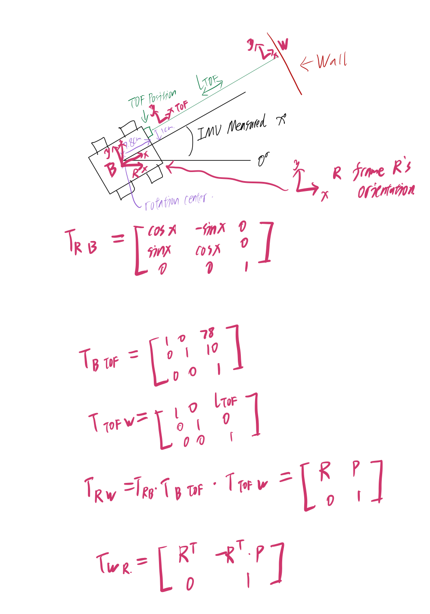

Lab 9 Report
For this lab, we tried to map out a test space using the robot spinning in spot and record each rotation along with TOF reading,
so we could get a polar coordinate map of the suroundings.
PID Control
I used PID control on angle to rotate the robot. Though I didn't fully trust it to stop every 10 degrees, I do trust its readings.
From Fig.1, you can see the robot rotates 360 degrees very consitantly.
Fig.1 Five 360 degree trails
I modified it from lab6's PID code, just swapping readings from TOF to the gyroscope's accumulation, and switching going straight
to rotating. From below video, you can see that the robot isn't exactly rotating along the main axis, I thought I can ignore the
deviation, but turns out in the result, it isn't that good. Code attached below.
while(current_degree < 360){
z_gyro = 0;
prev_t = millis();
local_start = millis();
while (millis() - local_start < time_lim * 1000)
{
if (myICM.dataReady())
{
myICM.getAGMT(); // The values are only updated when you call 'getAGMT'
z_gyro = z_gyro + myICM.gyrZ() * dt * 0.001;
dt = millis() - prev_t;
prev_t += dt;
}
err = z_gyro - dest;
I_accum += dt * I_accum * err;
pid_dc = P * err + I * I_accum + D * (err - prev_err) / dt;
prev_err = err;
if (pid_dc > 0)
{
if (pid_dc < 30)
pid_dc = 0;
else if (pid_dc > DC_MAX)
pid_dc = DC_MAX;
else if (pid_dc < DEAD_BAND)
pid_dc = DEAD_BAND;
counterClockWise(pid_dc,0.7*pid_dc);
}
else
{
pid_dc = -pid_dc;
if (pid_dc < 30)
pid_dc = 0;
else if (pid_dc > DC_MAX)
pid_dc = DC_MAX;
else if (pid_dc < DEAD_BAND)
pid_dc = DEAD_BAND;
clockWise(pid_dc,0.7*pid_dc);
}
}
current_degree += z_gyro;
data_L9[data_i_L9][0] = current_degree;
data_L9[data_i_L9][1] = get_tof();
data_i_L9 += 1;
}
Results
Because I setup the IMU exactly the same position as the robot's rotation center,
so I don't need a transformation matrix for that, if ignoring the small margin of errors.
Though the TOF sensor isn't in the same frame as the rotation center, as Fig.2 shows,
it is off by x-axis of 78mm and y axis by 10mm. Taking that into account for each refference frame.
I calculated the x y coordinates from the polar coordinates. And got the not so good map scanning of
Fig.3. The one reason for the bad scan I think is the not so accurate rotation in place.
Another thing is that I think the TOF might not be in the best shape, I think its range has been
limited so that it couldn't get enough range readings, that's why everything is around in about the same distance.
Even though I haven't changed the range setting to short. And I've attached my excel sheet below.

Fig.2 Transformation frame illustration
Fig.3 Not so good map scan
Attached the data sheet below
Lab9 Data
Line-Based Map
For this part, I don't think I got a good enough scan to transfer it to a line based map.